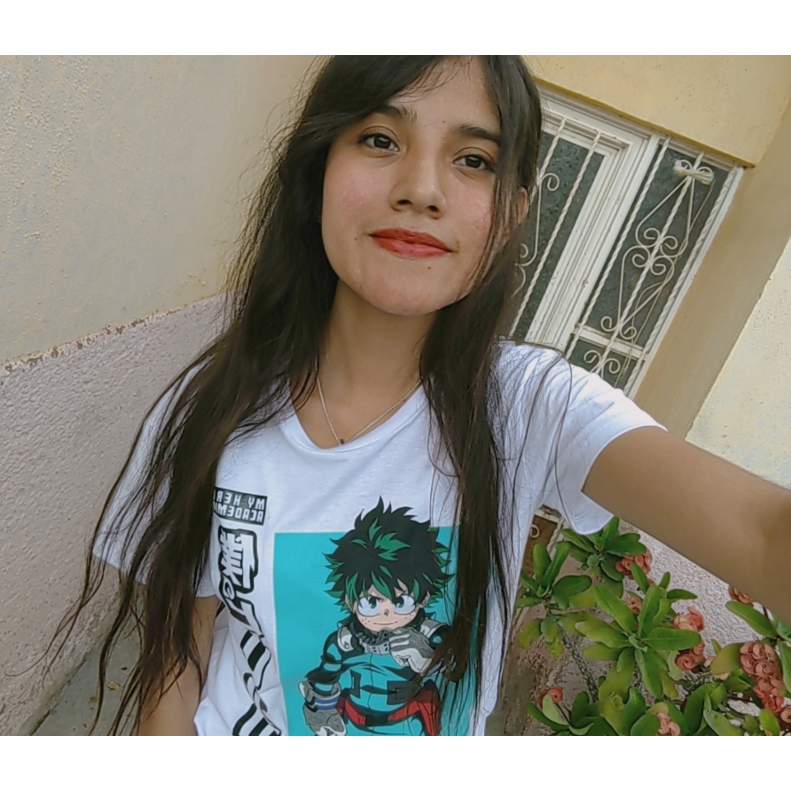
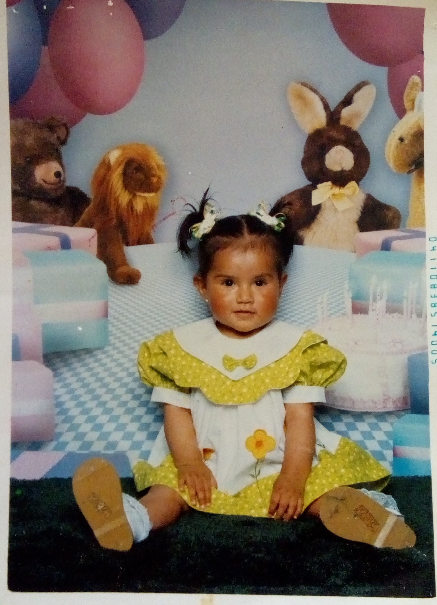
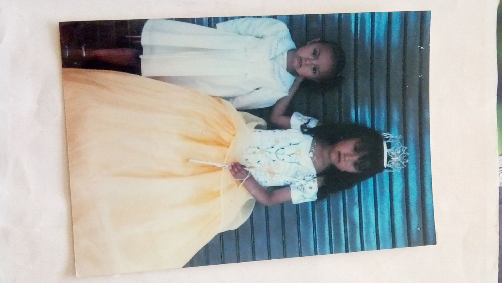
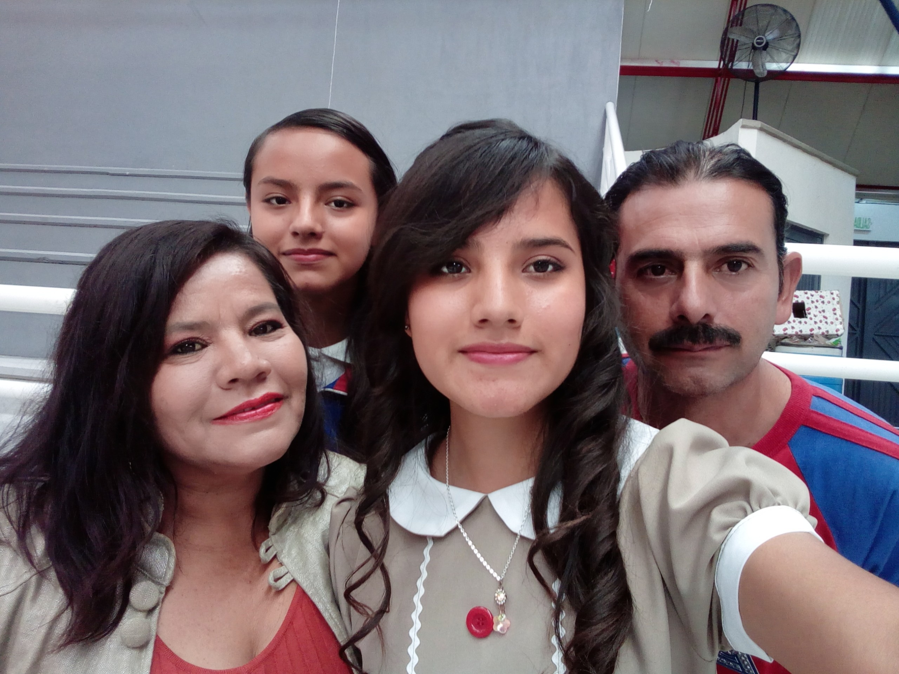

Menú de Navegacion:
 | Información Académica: |
| > | Gustos y Hobbies |
| > | Lugares Preferidos |
| > | Información Personal |
| > | Biografía |
| > | Frase |
| > | Fortalezas y Defectos |
| Información Académica: |
| > | Gustos y Hobbies |
| > | Lugares Preferidos |
| > | Información Personal |
| > | Biografía |
| > | Frase |
| > | Fortalezas y Defectos |
| Datos |  | |
|---|---|---|
| Nombre: | Litzy Evelyn Diaz Ortiz. | |
| Dirección: | Calle Pómez #406 Barrio de Chora. | |
| Número de teléfono: | 449-321-5134. | |
Mi nombre es Litzy Evelyn Diaz Ortiz, nací el 10 de mayo del 2003 en un hospital del municipio de Aguascalientes, mis padres son Ricardo Diaz Ortiz y Eva Ortiz Marmolejo, vivo en Rincón de romos Aguascalientes en la calle pómez #406 del barrio de chora con mis padres y 3 hermanos. Actualmente estudio en la universidad tecnológica del norte de Aguascalientes (UTNA) donde curso el 3er cuatrimestre en la carrera de Tecnologías de la Información área en desarrollo de Software Multiplataforma, elegí esta carrera ya que desde preparatoria estudie programación y me llamo mucho la atención todo lo relacionado con las computadoras y el poder crear yo misma aplicaciones para que as utilicen las demás personas, en cuanto a mis pasatiempos, me gusta escuchar música, ver anime y leer mangas, realmente me parece muy interesante la cultura japonesa y todo su contenido, así como su mercancía y productos, también me gusta pasar tiempo con mi familia y jugar con mis perritos. Tengo un personaje favorito del anime, el cual se llama Midoriya Izuku y aparece en la serie japonesa Boku No Hero Academia, el me recuerda muchas cosas buenas que pueden tener las personas, admiro su amabilidad, bondad, inteligencia, timidez y su fuerza, ya que, aunque las cosas parecen que no van bien y el mundo está en tu contra, él dice que no nos debemos desanimar y siempre debemos seguir adelante con una sonrisa.
|  |  |  |
Las cosas que no me gustan son:
Disfruto el tiempo en familia y también con mis amigos, que, aunque no son muchos, son más que suficientes para mí y agradezco mucho que estén a mi lado, ya que no soy una persona muy social o carismática, algunas personas incluso a veces me dicen que soy rara por no hacer las mismas cosas que los chicos de mi edad y preferir estar encerrada en mi casa viendo algo más.
Frase motivacional que llamo mi atención

“No te preocupes por lo que piensen los demás. Mantén la cabeza en alto y sigue hacia adelante”
-Deku
Me gusta mucho ya que siempre dejaba de hacer las cosas que me gustaban o escondía mis gustos por miedo a lo que me dijera la gente, ya que sabía que no a todo el mundo le iba a parecer bien mi manera de pensar, pero esta frase me dio fuerzas y me hizo reflexionar en que no importa lo que los demás piensen de nosotros, lo que importa es el cómo nos vemos nosotros mismos, por ello debemos ir con la cabeza en alto y orgullosos de lo que somos, ya que solo así podremos seguir adelante y disfrutar de la vida, por ello es una frase que yo recomiendo mucho.

| Mis fortalezas: | Mis defectos: |
|---|---|
|
|